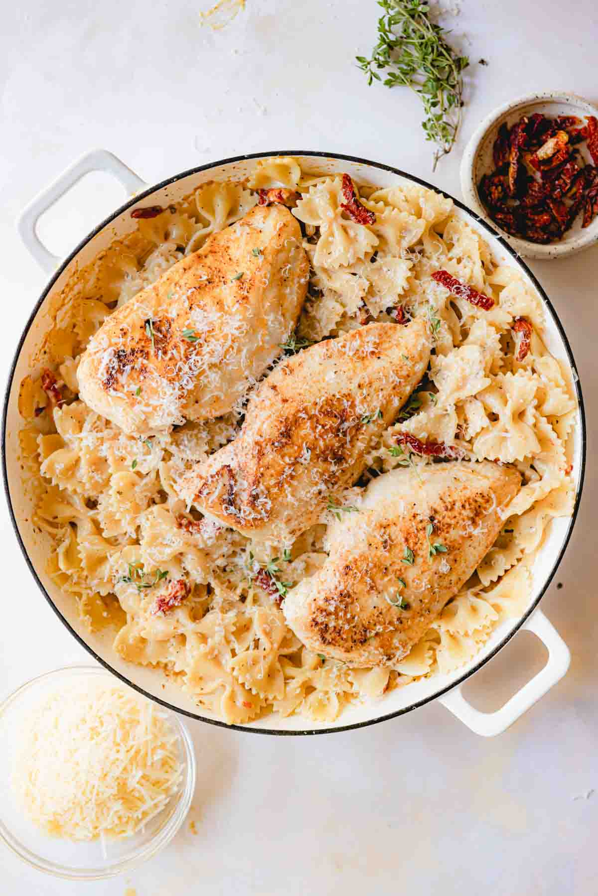

Marry Me Chicken
Home

A one-pot recipe, this Marry Me Chicken Pasta has perfectly cooked chicken breast, sun-dried tomatoes, and a creamy sauce all tossed together with pasta. It's done in 30 minutes and the perfect date night dinner recipe. It's so good it may even end up in a marriage proposal!
- Boneless Skinless Chicken Breasts
- Sundried Tomatoes
- Pasta
- Heavy Cream
- Parmesan Cheese
- Spices and Seasonings
- In a small bowl mix together the salt, pepper, garlic powder, and paprika. Season the chicken with this mixture and set aside
- Bring a large pot of salted water to a boil and prepare the pasta al dente according to package directions.
- While the pasta cooks, add the olive oil to a large skillet over medium high heat. Cook the chicken on one side for 5 minutes until it's golden brown.
- Flip the chicken over and continue cooking for an additional 5-7 minutes or until it reaches an internal temperature of 165 degrees. Remove the chicken and set aside.
- Add the butter to the pan along with the sliced shallot and cook for 1-2 minutes. Be sure to scrape up the brown bits of chicken left in the bottom of the pan to get it in the delicious sauce!
- Sprinkle the all purpose flour in and stir to coat the shallots in the flour. 1 cup at a time add the chicken stock in, stirring in between for 2-3 minutes to allow the sauce to thicken up.
- Stir in the sundried tomatoes and Italian seasoning.
- Reduce to medium heat and then stir in the heavy cream and Parmesan cheese and stir until the cheese is melted.
- Add pasta to the dish and toss to combine.
- Top with the cooked chicken and some fresh basil